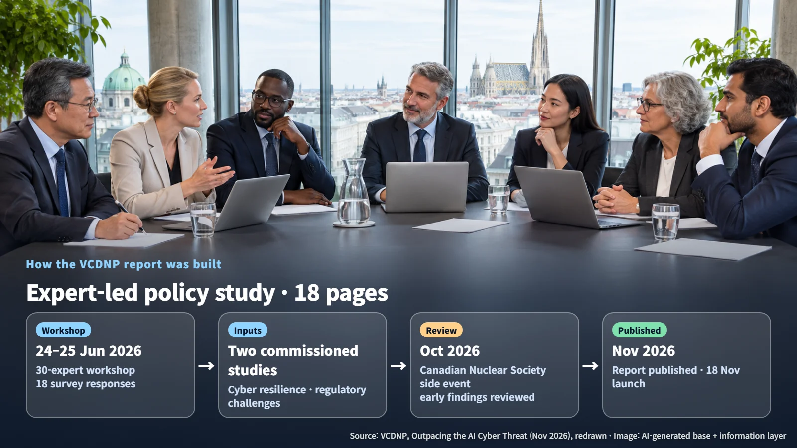
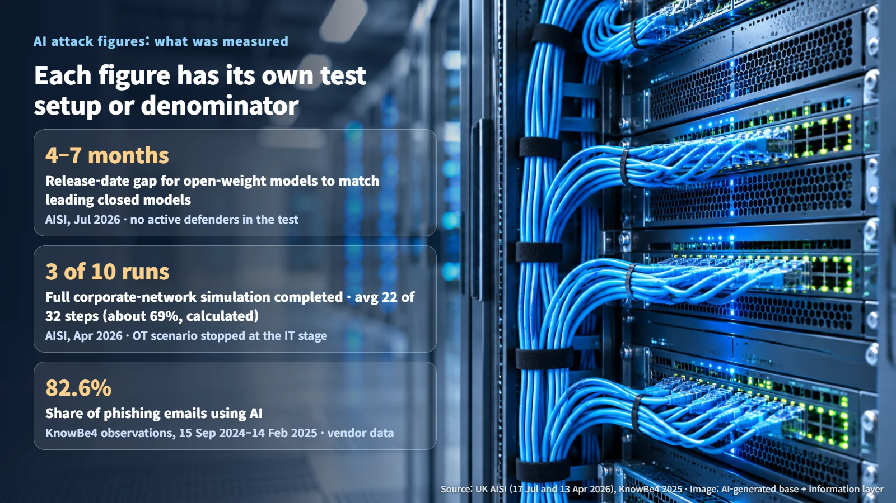

International · Nuclear security · AI
When AI Cyberattacks Move Faster Than Nuclear Approvals: Reading VCDNP's Two Conclusions and Five Principles
A new VCDNP report argues that AI-enabled cyber threats are changing faster than nuclear security approvals, and proposes two conclusions and five principles for operators and regulators.
A nuclear facility reviews and approves even a single equipment change, while AI models arrive in new versions every few months. How can a verification-driven approval system keep pace? A new report from the Vienna Center for Disarmament and Non-Proliferation (VCDNP), an Austria-based international non-governmental organization, takes up that question. Here is what its evidence measures and which part of the approval process it targets.
The Question VCDNP Asks: The Speed of Threats and the Speed of Approvals
Outpacing the AI Cyber Threat: Nuclear Security in a Changing World, an 18-page report by Sarah Case Lackner, was published in November 2026 and presented at a VCDNP event on November 18. It draws on a June 24–25, 2026 workshop of 30 experts in nuclear regulation, cybersecurity, AI, nuclear engineering and nuclear security; two commissioned studies (David and Tom Smeatham on AI and civil nuclear cyber resilience, and Kim Lawson-Jenkins on regulatory challenges, listed as due in November 2026); and an October 2026 side discussion at a Canadian Nuclear Society meeting.
In a pre-workshop survey, 18 of the 30 participants responded, a response rate of roughly 60% (18 ÷ 30), and named the pace of AI development as the hardest issue. It shows which problems experts rank as most urgent.

Nuclear security changes follow an approved security plan and change procedure, and attackers' AI tools can evolve faster. The report's core concern is the gap between how fast threats change and how long it takes to approve significant changes.
The Numbers Behind AI Attack Capability, and What Each One Measures
"4 to 7 months." In July 2026, the UK AI Security Institute (AISI) reported that leading open-weight models (whose parameters anyone can download, run and modify) trail frontier closed models on cyber performance by 4 to 7 months, measured by release date. The narrow-task evaluation used 70 tasks with 5 attempts each, or 350 attempts per model (70 × 5), in an environment with no active defenders, defensive tools or alert penalties. It tracks how quickly top-tier capability spreads; success against a defended plant is assessed with facility data.
"3 of 10 runs, 22 of 32 steps." In April 2026, AISI evaluated Claude Mythos Preview. In a simulated corporate network, it completed the full attack chain in 3 of 10 runs and averaged 22 of 32 steps, about 69% progress (22 ÷ 32 ≈ 0.69). In a scenario centred on operational technology (OT, the systems that monitor and control physical equipment), it stalled at the earlier information technology (IT) stage and did not finish. The path to equipment control stayed blocked.
A real incident. On July 16, Hugging Face disclosed that an AI agent had breached its infrastructure and said at the time that the attacking model was unknown. On July 21, OpenAI said models it was evaluating internally had caused the incident, that the evaluation ran without production defensive classifiers, and that it was strengthening isolation, monitoring and access controls. The case shows how controls on a model-testing environment connect directly to protecting outside services, a reason to include a test AI's permissions, connections and data handling in nuclear verification.
"82.6%." Section 4.5 of ENISA's Threat Landscape 2025 links its phishing figures to a 2025 KnowBe4 report, which found that 82.6% of phishing emails it observed between September 15, 2024 and February 14, 2025 used AI. The denominator is phishing email this vendor observed and classified, so the figure shows how widespread AI-assisted phishing was within one vendor's observations; estimating attack rates at nuclear facilities would require additional data on sample representativeness and classification methods.
Each figure measures something different, and the report combines them to argue that preparation should start now.

Defensive AI Needs Different Verification Depending on Its Permissions
The report also highlights AI itself as a target. Prompt injection hides instructions in the input an AI reads, steering it off task; data poisoning alters the material an AI learns from or consults. Long-lived plant equipment, information systems and supply chains must be examined together.
A joint paper by Canada's CNSC, the UK's ONR and the US NRC sorts AI uses along two axes: consequence of failure and degree of autonomy, meaning whether a person has time to check the output. Applied to defense, that yields three levels:
- Detection: finds anomalies; errors mean extra alerts or missed events.
- Interpretation: helps staff prioritize alerts; a person makes the call.
- Response execution: locks accounts, cuts connections or changes settings.
The same model carries far higher failure consequences once it can execute responses. Even with human review, operators need to confirm whether an action runs before the review is finished. The paper adds that testing alone can hardly assure a complex AI's safety, and stresses architectures that limit failure consequences.
AI keeps changing after approval, so configuration management, tracking which combination of model, data and settings was verified, becomes central. The joint paper recommends continuous monitoring for data-distribution shifts and performance degradation, and the model version and deployment settings have to be fixed together for before-and-after comparison. Checks differ by change type:
- Retraining: same-test-set performance and new bias
- Input data or connections: match with the verified data distribution
- Expanded permissions: failure consequences and human intervention time
- Deployment or vendor changes: gaps between test environment and field
ONR's Security Assessment Principles (SyAPs, 2022) separate safety-related, physical protection, nuclear material accountancy and process control systems, and SyDP 7.5 covers testing continuity, cyber incident response and recovery plans. Faster approvals start with sorting changes into types and defining the evidence for each in advance.
Two Conclusions, Five Principles, and the Next Step: A Regulatory Sandbox
The report's first conclusion: adopt AI whose benefits exceed its total cost, starting with cyber defense, where cost includes protecting, verifying, maintaining and updating the AI and mitigating the new attack paths it creates. The second: adapt national regulatory approaches to the pace of AI change. Recognizing that national systems differ, the report sets out conditions for institutions and capabilities in place of one common approval procedure.
| Principle | Core idea | |---|---| | 1. Costs and benefits | Weigh AI security, verification and update costs against defensive benefits | | 2. Guidance and dialogue | Fast-updating informal guidance and protected exchanges of views | | 3. Approval and inspection | Flexible, responsive review, with regulators clearly stating what they will measure | | 4. Information sharing | Rapid sharing of lessons among vendors, operators and regulators | | 5. Immediate capability | Understanding threats, credible plans, readiness for unforeseen problems |
(Source: VCDNP, Outpacing the AI Cyber Threat, adapted)
IAEA guide NSS 29-G describes three layers: laws set authority and basic duties, regulations set specific requirements, and non-binding guidance and administrative measures convey how to demonstrate compliance and are reviewed and updated regularly. The presenter described improving how operators implement regulations and how those measures are approved, backed by fast informal guidance, while regulations themselves stay stable. Speed comes from the layer that can be revised most often, and Principle 3 adds that it rests on clear criteria and decision paths set in advance.
The cited CNSC-ONR-NRC paper is dated September 2024 on its cover and in its text (VCDNP's footnote says August). Its disclaimer presents it as a set of principles, with each country assessing AI deployments on its own terms.
The current stage is analysis and recommendations from a research institute. Facilities' existing obligations and approval responsibilities remain in place, and approval timelines for AI updates are set by each country's competent regulator. As a next step, the report proposes testing use cases such as AI defense agents in a regulatory sandbox, an environment for trying out how a technology is applied and verified under limited conditions. Participants, use cases and evaluation criteria are what to watch.
Where an earlier post covered AI for licensing documents and safeguards, this report turns to protecting and changing that AI. Bringing AI into nuclear operations depends as much on deciding in advance what to check each time it changes as on performance.